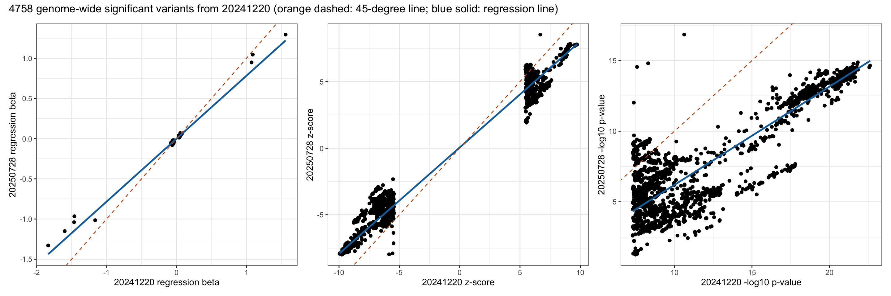
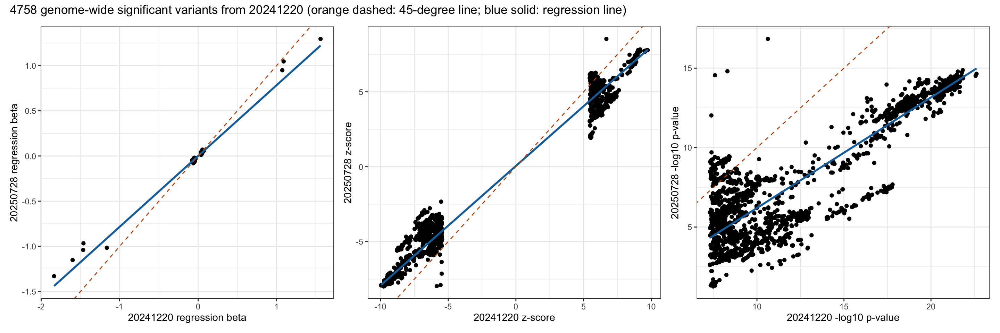

Compare GWAS results on the same trait from two versions of input data files
Xiang Zhu, Ph.D.
First created on 2025-04-04; Last modified on 2025-08-18
Last updated: 2025-08-18
Checks: 6 1
Knit directory: scratch/
This reproducible R Markdown analysis was created with workflowr (version 1.7.1). The Checks tab describes the reproducibility checks that were applied when the results were created. The Past versions tab lists the development history.
The R Markdown is untracked by Git. To know which version of the R
Markdown file created these results, you’ll want to first commit it to
the Git repo. If you’re still working on the analysis, you can ignore
this warning. When you’re finished, you can run
wflow_publish to commit the R Markdown file and build the
HTML.
Great job! The global environment was empty. Objects defined in the global environment can affect the analysis in your R Markdown file in unknown ways. For reproduciblity it’s best to always run the code in an empty environment.
The command set.seed(20250402) was run prior to running
the code in the R Markdown file. Setting a seed ensures that any results
that rely on randomness, e.g. subsampling or permutations, are
reproducible.
Great job! Recording the operating system, R version, and package versions is critical for reproducibility.
Nice! There were no cached chunks for this analysis, so you can be confident that you successfully produced the results during this run.
Great job! Using relative paths to the files within your workflowr project makes it easier to run your code on other machines.
Great! You are using Git for version control. Tracking code development and connecting the code version to the results is critical for reproducibility.
The results in this page were generated with repository version 0096294. See the Past versions tab to see a history of the changes made to the R Markdown and HTML files.
Note that you need to be careful to ensure that all relevant files for
the analysis have been committed to Git prior to generating the results
(you can use wflow_publish or
wflow_git_commit). workflowr only checks the R Markdown
file, but you know if there are other scripts or data files that it
depends on. Below is the status of the Git repository when the results
were generated:
Ignored files:
Ignored: .DS_Store
Ignored: .Rhistory
Ignored: .Rproj.user/
Untracked files:
Untracked: analysis/compare_mmi_with_omm_01.Rmd
Note that any generated files, e.g. HTML, png, CSS, etc., are not included in this status report because it is ok for generated content to have uncommitted changes.
There are no past versions. Publish this analysis with
wflow_publish() to start tracking its development.
Overview of two GWAS for comparison
Number of rows in the new data frame: 70608349 Number of rows in the old data frame: 70815948 Number of genome-wide significant variants in the new GWAS: 3964 Number of genome-wide significant variants in the old GWAS: 4758 Number of GWAS loci in the new GWAS: 25 Number of GWAS loci in the old GWAS: 30 Total number of rows after joining two data frames: 70473156 Comparison across all variants
Pearson correlation between new_A1FREQ in new and old_A1FREQ in old:
Estimate = 0.99999994 , 95% CI = [ 0.99999994 , 0.99999994 ]
Regression coefficients for new_A1FREQ (new ~ old):
Estimate Std. Error t value Pr(>|t|)
(Intercept) -4.918852e-09 6.132819e-09 -8.020539e-01 0.4225218
x 1.000000e+00 4.059085e-08 2.463610e+07 0.0000000
Pearson correlation between new_BETA in new and old_BETA in old:
Estimate = 0.78831836 , 95% CI = [ 0.78822996 , 0.78840672 ]
Regression coefficients for new_BETA (new ~ old):
Estimate Std. Error t value Pr(>|t|)
(Intercept) -5.076878e-05 2.030131e-05 -2.500764 0.01239257
x 7.906439e-01 7.350746e-05 10755.967470 0.00000000
Pearson correlation between new_SE in new and old_SE in old:
Estimate = 0.9994879 , 95% CI = [ 0.99948766 , 0.99948814 ]
Regression coefficients for new_SE (new ~ old):
Estimate Std. Error t value Pr(>|t|)
(Intercept) 0.0002145793 1.055010e-06 203.3908 0
x 1.0020160919 3.821387e-06 262212.6577 0
Pearson correlation between new_CHISQ in new and old_CHISQ in old:
Estimate = 0.66013673 , 95% CI = [ 0.66000498 , 0.66026844 ]
Regression coefficients for new_CHISQ (new ~ old):
Estimate Std. Error t value Pr(>|t|)
(Intercept) 0.3772543 1.620231e-04 2328.399 0
x 0.6295139 8.532644e-05 7377.712 0
Pearson correlation between new_LOG10P in new and old_LOG10P in old:
Estimate = 0.63937728 , 95% CI = [ 0.63923923 , 0.63951529 ]
Regression coefficients for new_LOG10P (new ~ old):
Estimate Std. Error t value Pr(>|t|)
(Intercept) 0.1662612 5.743613e-05 2894.714 0
x 0.6217855 8.907125e-05 6980.766 0
Pearson correlation between new_ZSCORE in new and old_ZSCORE in old:
Estimate = 0.79008317 , 95% CI = [ 0.78999542 , 0.79017088 ]
Regression coefficients for new_ZSCORE (new ~ old):
Estimate Std. Error t value Pr(>|t|)
(Intercept) -0.0002983296 7.397638e-05 -4.032769 5.512354e-05
x 0.7882620512 7.285279e-05 10819.929336 0.000000e+00Comparison across genome-wide significant variants from 20250728
Pearson correlation between new_A1FREQ in new and old_A1FREQ in old:
Estimate = 0.99999957 , 95% CI = [ 0.99999954 , 0.9999996 ]
Regression coefficients for new_A1FREQ (new ~ old):
Estimate Std. Error t value Pr(>|t|)
(Intercept) 0.000442942 4.641806e-06 95.42451 0
x 0.999135257 1.470652e-05 67938.23284 0
Pearson correlation between new_BETA in new and old_BETA in old:
Estimate = 0.99335303 , 95% CI = [ 0.99292738 , 0.99375315 ]
Regression coefficients for new_BETA (new ~ old):
Estimate Std. Error t value Pr(>|t|)
(Intercept) 0.01215748 0.0002011659 60.43506 0
x 1.03291329 0.0019015462 543.19651 0
Pearson correlation between new_SE in new and old_SE in old:
Estimate = 0.99999968 , 95% CI = [ 0.99999966 , 0.9999997 ]
Regression coefficients for new_SE (new ~ old):
Estimate Std. Error t value Pr(>|t|)
(Intercept) 1.245646e-05 2.217405e-07 56.17585 0
x 1.000888e+00 1.276007e-05 78439.06101 0
Pearson correlation between new_CHISQ in new and old_CHISQ in old:
Estimate = 0.92860646 , 95% CI = [ 0.9241923 , 0.93277257 ]
Regression coefficients for new_CHISQ (new ~ old):
Estimate Std. Error t value Pr(>|t|)
(Intercept) 25.2539091 0.18965391 133.1579 0
x 0.3696869 0.00234691 157.5207 0
Pearson correlation between new_LOG10P in new and old_LOG10P in old:
Estimate = 0.92797958 , 95% CI = [ 0.9235282 , 0.93218098 ]
Regression coefficients for new_LOG10P (new ~ old):
Estimate Std. Error t value Pr(>|t|)
(Intercept) 6.063749 0.043791969 138.4672 0
x 0.370087 0.002360952 156.7533 0
Pearson correlation between new_ZSCORE in new and old_ZSCORE in old:
Estimate = 0.98278444 , 95% CI = [ 0.98168823 , 0.98381557 ]
Regression coefficients for new_ZSCORE (new ~ old):
Estimate Std. Error t value Pr(>|t|)
(Intercept) 0.5222112 0.022874049 22.82986 1.743789e-108
x 0.8783399 0.002623284 334.82450 0.000000e+00Comparison across genome-wide significant variants from 20241220
Pearson correlation between new_A1FREQ in new and old_A1FREQ in old:
Estimate = 0.99999965 , 95% CI = [ 0.99999963 , 0.99999967 ]
Regression coefficients for new_A1FREQ (new ~ old):
Estimate Std. Error t value Pr(>|t|)
(Intercept) 0.0004268153 4.182927e-06 102.0375 0
x 0.9992431195 1.209898e-05 82589.0452 0
Pearson correlation between new_BETA in new and old_BETA in old:
Estimate = 0.99304431 , 95% CI = [ 0.99263894 , 0.99342742 ]
Regression coefficients for new_BETA (new ~ old):
Estimate Std. Error t value Pr(>|t|)
(Intercept) -0.0003275065 0.0001172487 -2.793263 0.005238801
x 0.7834017104 0.0013468637 581.648863 0.000000000
Pearson correlation between new_SE in new and old_SE in old:
Estimate = 0.99997679 , 95% CI = [ 0.99997543 , 0.99997807 ]
Regression coefficients for new_SE (new ~ old):
Estimate Std. Error t value Pr(>|t|)
(Intercept) -4.778539e-06 1.261246e-06 -3.788743 0.0001532825
x 1.003198e+00 9.911391e-05 10121.669549 0.0000000000
Pearson correlation between new_CHISQ in new and old_CHISQ in old:
Estimate = 0.95003757 , 95% CI = [ 0.94719227 , 0.95273328 ]
Regression coefficients for new_CHISQ (new ~ old):
Estimate Std. Error t value Pr(>|t|)
(Intercept) -3.9237946 0.250612578 -15.65681 6.489821e-54
x 0.6885912 0.003280522 209.90289 0.000000e+00
Pearson correlation between new_LOG10P in new and old_LOG10P in old:
Estimate = 0.94908986 , 95% CI = [ 0.94619208 , 0.95183544 ]
Regression coefficients for new_LOG10P (new ~ old):
Estimate Std. Error t value Pr(>|t|)
(Intercept) -0.7554834 0.058845423 -12.83844 4.102338e-37
x 0.6955937 0.003347692 207.78308 0.000000e+00
Pearson correlation between new_ZSCORE in new and old_ZSCORE in old:
Estimate = 0.991779 , 95% CI = [ 0.99130022 , 0.99223153 ]
Regression coefficients for new_ZSCORE (new ~ old):
Estimate Std. Error t value Pr(>|t|)
(Intercept) 0.05170145 0.012658974 4.084174 4.496108e-05
x 0.79753031 0.001492087 534.506430 0.000000e+00Overlap of genome-wide significant variants between two GWAS
20250728 p < 5e-08 20250728 p >= 5e-08
20241220 p < 5e-08 3367 1391
20241220 p >= 5e-08 597 70467801
Fisher's Exact Test for Count Data
data: contingency_table
p-value < 2.2e-16
alternative hypothesis: true odds ratio is not equal to 1
95 percent confidence interval:
8.402051e+03 4.503600e+15
sample estimates:
odds ratio
4.5036e+15 Visualization of comparison
 

R version 4.5.1 (2025-06-13)
Platform: aarch64-apple-darwin20
Running under: macOS Sequoia 15.6
Matrix products: default
BLAS: /Library/Frameworks/R.framework/Versions/4.5-arm64/Resources/lib/libRblas.0.dylib
LAPACK: /Library/Frameworks/R.framework/Versions/4.5-arm64/Resources/lib/libRlapack.dylib; LAPACK version 3.12.1
locale:
[1] en_US.UTF-8/en_US.UTF-8/en_US.UTF-8/C/en_US.UTF-8/en_US.UTF-8
time zone: America/Los_Angeles
tzcode source: internal
attached base packages:
[1] stats graphics grDevices utils datasets methods base
other attached packages:
[1] xzTools_0.0.0.9000 patchwork_1.3.1 ggplot2_3.5.2 dplyr_1.1.4
[5] data.table_1.17.8
loaded via a namespace (and not attached):
[1] Matrix_1.7-3 gtable_0.3.6 jsonlite_2.0.0 compiler_4.5.1
[5] promises_1.3.3 tidyselect_1.2.1 Rcpp_1.1.0 stringr_1.5.1
[9] git2r_0.36.2 later_1.4.2 jquerylib_0.1.4 splines_4.5.1
[13] scales_1.4.0 yaml_2.3.10 fastmap_1.2.0 lattice_0.22-7
[17] R6_2.6.1 labeling_0.4.3 generics_0.1.4 workflowr_1.7.1
[21] knitr_1.50 tibble_3.3.0 rprojroot_2.0.4 RColorBrewer_1.1-3
[25] bslib_0.9.0 pillar_1.11.0 R.utils_2.13.0 rlang_1.1.6
[29] cachem_1.1.0 stringi_1.8.7 httpuv_1.6.16 xfun_0.52
[33] fs_1.6.6 sass_0.4.10 cli_3.6.5 mgcv_1.9-3
[37] withr_3.0.2 magrittr_2.0.3 digest_0.6.37 grid_4.5.1
[41] rstudioapi_0.17.1 nlme_3.1-168 lifecycle_1.0.4 R.oo_1.27.1
[45] R.methodsS3_1.8.2 vctrs_0.6.5 evaluate_1.0.4 glue_1.8.0
[49] farver_2.1.2 rmarkdown_2.29 tools_4.5.1 pkgconfig_2.0.3
[53] htmltools_0.5.8.1